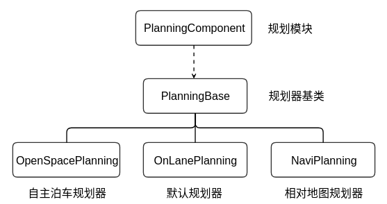

14. Planning
吾尝终日而思矣 不如须臾之所学也
14.1. Planning模块简介
规划(planning)模块的作用是根据感知预测的结果，当前的车辆信息和路况规划出一条车辆能够行驶的轨迹，这个轨迹会交给控制(control)模块，控制模块通过油门，刹车和方向盘使得车辆按照规划的轨迹运行。 规划模块的轨迹是短期轨迹，即车辆短期内行驶的轨迹，长期的轨迹是routing模块规划出的导航轨迹，即起点到目的地的轨迹，规划模块会先生成导航轨迹，然后根据导航轨迹和路况的情况，沿着短期轨迹行驶，直到目的地。这点也很好理解，我们开车之前先打开导航，然后根据导航行驶，如果前面有车就会减速或者变道，超车，避让行人等，这就是短期轨迹，结合上述的方式直到行驶到目的地。
14.1.1. Planning输入输出
我们先看下Apollo的数据流向：

可以看到规划(planning)模块的上游是Localization, Prediction, Routing模块，而下游是Control模块。Routing模块先规划出一条导航线路，然后Planning模块根据这条线路做局部优化，如果Planning模块发现短期规划的线路行不通（比如前面修路，或者错过了路口），会触发Routing模块重新规划线路，因此这两个模块的数据流是双向的。 Planning模块的输入在”planning_component.h”中，接口如下:
bool Proc(const std::shared_ptr<prediction::PredictionObstacles>&
prediction_obstacles,
const std::shared_ptr<canbus::Chassis>& chassis,
const std::shared_ptr<localization::LocalizationEstimate>&
localization_estimate) override;
输入参数为:
预测的障碍物信息(prediction_obstacles)
车辆底盘(chassis)信息(车辆的速度，加速度，航向角等信息)
车辆当前位置(localization_estimate)
实际上还有高精度地图信息，不在参数中传入，而是在函数中直接读取的。
Planning模块的输出结果在”PlanningComponent::Proc()”中，为规划好的线路，发布到Control模块订阅的Topic中。 输出结果为：规划好的路径。
planning_writer_->Write(std::make_shared<ADCTrajectory>(adc_trajectory_pb));
14.1.2. Planning整个流程
下图是整个Planning模块的执行过程：

模块的入口是PlanningComponent，在Cyber中注册模块，订阅和发布消息，并且注册对应的Planning类。
Planning的过程之前是定时器触发，即每隔一段固定的时间执行一次，现已经改为事件触发，即只要收集完成对应TOPIC的消息，就会触发执行，这样的好处是提高的实时性。
Planning类主要实现了2个功能，一个是启动ReferenceLineProvider来提供参考线，后面生成的轨迹都是在参考线的基础上做优化，ReferenceLineProvider启动了一个单独的线程，每隔50ms执行一次，和Planning主流程并行执行。Planning类另外的一个功能是执行Planning主流程。
Planning主流程先是选择对应的Planner，我们这里主要分析PublicRoadPlanner，在配置文件中定义了Planner支持的场景(Scenario)，把规划分为具体的几个场景来执行，每个场景又分为几个阶段(Stage)，每个阶段会执行多个任务(Task)，任务执行完成后，对应的场景就完成了。不同场景间的切换是由一个状态机(ScenarioDispatch)来控制的。规划控制器根据ReferenceLineProvider提供的参考线，在不同的场景下做切换，生成一条车辆可以行驶的轨迹，并且不断重复上述过程直到到达目的地。
接下来我们逐步分析整个planning模块的代码结构。
14.2. Planning模块入口
14.2.1. 模块注册
Planning模块的入口为”planning_component.h”和”planning_component.cc”两个文件，实现的功能如下：
// 订阅和发布消息
std::shared_ptr<cyber::Reader<perception::TrafficLightDetection>>
traffic_light_reader_;
std::shared_ptr<cyber::Reader<routing::RoutingResponse>> routing_reader_;
std::shared_ptr<cyber::Reader<planning::PadMessage>> pad_message_reader_;
std::shared_ptr<cyber::Reader<relative_map::MapMsg>> relative_map_reader_;
std::shared_ptr<cyber::Writer<ADCTrajectory>> planning_writer_;
std::shared_ptr<cyber::Writer<routing::RoutingRequest>> rerouting_writer_;
// 在Cyber中注册模块
CYBER_REGISTER_COMPONENT(PlanningComponent)
14.2.2. 模块初始化
除了注册模块，订阅和发布消息之外，planning模块实现了2个主要函数”init”和”proc”。 Init中实现了模块的初始化：
if (FLAGS_open_space_planner_switchable) {
planning_base_ = std::make_unique<OpenSpacePlanning>();
} else {
if (FLAGS_use_navigation_mode) {
planning_base_ = std::make_unique<NaviPlanning>();
} else {
planning_base_ = std::make_unique<OnLanePlanning>();
}
}
上面实现了3种Planning的注册，planning模块根据配置选择不同的Planning实现方式，”FLAGS_open_space_planner_switchable”和”FLAGS_use_navigation_mode”在Planning模块的conf目录中。因为上述2个配置默认都为false，Planning默认情况下的实现是”OnLanePlanning”。下面介绍下这3种Planning的区别。
OpenSpacePlanning - 主要的应用场景是自主泊车和狭窄路段的掉头。参考
NaviPlanning -
OnLanePlanning - 主要的应用场景是开放道路的自动驾驶。
模块之间的关系如下： 
可以看到”OpenSpacePlanning”,”NaviPlanning”和”OnLanePlanning”都继承自同一个基类，并且在PlanningComponent中通过配置选择一个具体的实现进行注册。
Init接下来实现了具体的消息发布和消息订阅，我们只看具体的一个例子：
// 读取routing模块的消息
routing_reader_ = node_->CreateReader<RoutingResponse>(
FLAGS_routing_response_topic,
[this](const std::shared_ptr<RoutingResponse>& routing) {
AINFO << "Received routing data: run routing callback."
<< routing->header().DebugString();
std::lock_guard<std::mutex> lock(mutex_);
routing_.CopyFrom(*routing);
});
// 读取红绿灯
traffic_light_reader_ = ...
// 是否使用导航模式
if (FLAGS_use_navigation_mode) {
pad_message_reader_ = ...
// 读取相对地图
relative_map_reader_ = ...
}
// 发布规划好的线路
planning_writer_ =
node_->CreateWriter<ADCTrajectory>(FLAGS_planning_trajectory_topic);
// 发布重新规划请求
rerouting_writer_ =
node_->CreateWriter<RoutingRequest>(FLAGS_routing_request_topic);
至此，Planning模块的初始化就完成了。
14.2.3. 模块运行
Proc的主要是检查数据，并且执行注册好的Planning，生成路线并且发布。
bool PlanningComponent::Proc(...) {
// 1. 检查是否需要重新规划线路。
CheckRerouting();
// 2. 数据放入local_view_中，并且检查输入数据。
...
// 3. 执行注册好的Planning，生成线路。
planning_base_->RunOnce(local_view_, &adc_trajectory_pb);
// 4. 发布消息
planning_writer_->Write(std::make_shared<ADCTrajectory>(adc_trajectory_pb));
}
整个”PlanningComponent”的分析就完成了，可以看到”PlanningComponent”是Planning模块的入口，在Apollo3.5引入了Cyber之后，实现了Planning模块在Cyber中的注册，订阅和发布topic消息。同时实现了3种不同的Planning，根据配置选择其中的一种并且运行。 由于默认的Planning是开放道路的OnLanePlanning，我们接下来主要分析这个Planning。
14.3. OnLanePlanning
每次Planning会根据以下2个信息作为输入来执行：
Planning上下文信息
Frame结构体(车辆信息，位置信息等所有规划需要用到的信息，在/planning/common/frame.h中)
uint32_t sequence_num_ = 0;
LocalView local_view_;
const hdmap::HDMap *hdmap_ = nullptr;
common::TrajectoryPoint planning_start_point_;
common::VehicleState vehicle_state_;
std::list<ReferenceLineInfo> reference_line_info_;
bool is_near_destination_ = false;
/**
* the reference line info that the vehicle finally choose to drive on
**/
const ReferenceLineInfo *drive_reference_line_info_ = nullptr;
ThreadSafeIndexedObstacles obstacles_;
std::unordered_map<std::string, const perception::TrafficLight *>
traffic_lights_;
ChangeLaneDecider change_lane_decider_;
ADCTrajectory current_frame_planned_trajectory_; // last published trajectory
std::vector<routing::LaneWaypoint> future_route_waypoints_;
14.3.1. 初始化
OnLanePlanning的初始化逻辑在Init中，主要实现分配具体的Planner，启动参考线提供器(reference_line_provider_)，代码分析如下：
Status OnLanePlanning::Init(const PlanningConfig& config) {
...
// 启动参考线提供器，会另启动一个线程，执行一个定时任务，每隔50ms提供一次参考线。
reference_line_provider_ = std::make_unique<ReferenceLineProvider>(hdmap_);
reference_line_provider_->Start();
// 为Planning分配具体的Planner。
planner_ = planner_dispatcher_->DispatchPlanner();
...
}
可以看到”DispatchPlanner”在”OnLanePlanning”实例化的时候就指定了。
class OnLanePlanning : public PlanningBase {
public:
OnLanePlanning() {
planner_dispatcher_ = std::make_unique<OnLanePlannerDispatcher>();
}
在看”OnLanePlannerDispatcher”具体的实现，也是根据配置选择具体的”Planner”，默认为”PUBLIC_ROAD”规划器:
// 配置文件
standard_planning_config {
planner_type: PUBLIC_ROAD
planner_type: OPEN_SPACE
...
}
// OnLanePlannerDispatcher具体实现
std::unique_ptr<Planner> OnLanePlannerDispatcher::DispatchPlanner() {
PlanningConfig planning_config;
apollo::cyber::common::GetProtoFromFile(FLAGS_planning_config_file,
&planning_config);
if (FLAGS_open_space_planner_switchable) {
return planner_factory_.CreateObject(
// OPEN_SPACE规划器
planning_config.standard_planning_config().planner_type(1));
}
return planner_factory_.CreateObject(
// PUBLIC_ROAD规划器
planning_config.standard_planning_config().planner_type(0));
}
14.3.2. 事件触发
OnLanePlanning的主要逻辑在”RunOnce()”中，在Apollo 3.5之前是定时器触发，3.5改为事件触发，即收到对应的消息之后，就触发执行，这样做的好处是增加了实时性 参考。
void OnLanePlanning::RunOnce(const LocalView& local_view,
ADCTrajectory* const ptr_trajectory_pb) {
// 初始化Frame
status = InitFrame(frame_num, stitching_trajectory.back(), vehicle_state);
...
// 判断是否符合交通规则
for (auto& ref_line_info : *frame_->mutable_reference_line_info()) {
TrafficDecider traffic_decider;
traffic_decider.Init(traffic_rule_configs_);
auto traffic_status = traffic_decider.Execute(frame_.get(), &ref_line_info);
if (!traffic_status.ok() || !ref_line_info.IsDrivable()) {
ref_line_info.SetDrivable(false);
AWARN << "Reference line " << ref_line_info.Lanes().Id()
<< " traffic decider failed";
continue;
}
}
// 执行计划
status = Plan(start_timestamp, stitching_trajectory, ptr_trajectory_pb);
...
}
Status OnLanePlanning::Plan(
const double current_time_stamp,
const std::vector<TrajectoryPoint>& stitching_trajectory,
ADCTrajectory* const ptr_trajectory_pb) {
...
// 调用具体的(PUBLIC_ROAD)Planner执行
auto status = planner_->Plan(stitching_trajectory.back(), frame_.get(),
ptr_trajectory_pb);
...
}
上述就是”OnLanePlanning”的执行过程，先是Planner分发器根据配置，选择具体的planner，然后初始化Frame，(PUBLIC_ROAD)planner根据输入帧执行”Plan”方法。
14.4. Planner
我们先看下Planner目录结构，一共实现了5种Planner：
.
├── BUILD
├── navi_planner_dispatcher.cc
├── navi_planner_dispatcher.h
├── navi_planner_dispatcher_test.cc
├── on_lane_planner_dispatcher.cc
├── on_lane_planner_dispatcher.h
├── on_lane_planner_dispatcher_test.cc
├── planner_dispatcher.cc
├── planner_dispatcher.h
├── planner.h
├── lattice // lattice planner
├── navi // navi planner
├── open_space // open space planner
├── public_road // public road planner
└── rtk // rtk planner
可以看到Planner目录分别实现了Planner发布器和具体的Planner，关于发布器我们后面会根据流程图来介绍，这里先介绍一下5种不同的Planner。
rtk - 根据录制的轨迹来规划行车路线
public_road - 开放道路的轨迹规划器
lattice - 基于网格算法的轨迹规划器
navi - 基于实时相对地图的规划器
open_space - 自主泊车规划器
14.4.1. Planner注册场景
下面我们整理一下planner模块的流程：

PlanningComponent在cyber中注册
选择Planning
根据不同的Dispatcher，分发Planner
下面我们主要介绍”PublicRoadPlanner”，主要的实现还是在Init和Plan中。 init中主要是注册规划器支持的场景(scenario)。
Status PublicRoadPlanner::Init(const PlanningConfig& config) {
// 读取public Road配置
const auto& public_road_config =
config_.standard_planning_config().planner_public_road_config();
// 根据配置注册不同的场景
for (int i = 0; i < public_road_config.scenario_type_size(); ++i) {
const ScenarioConfig::ScenarioType scenario =
public_road_config.scenario_type(i);
supported_scenarios.insert(scenario);
}
scenario_manager_.Init(supported_scenarios);
}
我们看下”PublicRoadPlanner”支持的场景有哪些？
// 还是在"/conf/planning_config.pb.txt"中
standard_planning_config {
planner_type: PUBLIC_ROAD
planner_type: OPEN_SPACE
planner_public_road_config {
// 支持的场景
scenario_type: LANE_FOLLOW // 车道线保持
scenario_type: SIDE_PASS // 超车
scenario_type: STOP_SIGN_UNPROTECTED // 停止
scenario_type: TRAFFIC_LIGHT_PROTECTED // 红绿灯
scenario_type: TRAFFIC_LIGHT_UNPROTECTED_LEFT_TURN // 红绿灯左转
scenario_type: TRAFFIC_LIGHT_UNPROTECTED_RIGHT_TURN // 红绿灯右转
scenario_type: VALET_PARKING // 代客泊车
}
14.4.2. 运行场景
接着看”Plan”中的实现：
Status PublicRoadPlanner::Plan(const TrajectoryPoint& planning_start_point,
Frame* frame,
ADCTrajectory* ptr_computed_trajectory) {
DCHECK_NOTNULL(frame);
// 更新场景，决策当前应该执行什么场景
scenario_manager_.Update(planning_start_point, *frame);
// 获取当前场景
scenario_ = scenario_manager_.mutable_scenario();
// 执行当前场景的任务
auto result = scenario_->Process(planning_start_point, frame);
// 当前场景完成
if (result == scenario::Scenario::STATUS_DONE) {
// only updates scenario manager when previous scenario's status is
// STATUS_DONE
scenario_manager_.Update(planning_start_point, *frame);
} else if (result == scenario::Scenario::STATUS_UNKNOWN) {
// 当前场景失败
return Status(common::PLANNING_ERROR, "scenario returned unknown");
}
return Status::OK();
}
可以看到”Planner”模块把具体的规划转化成一系列的场景，每次执行规划之前先判断更新当前的场景，然后针对具体的场景去执行。 下面我们先看下”Scenario”模块，然后把这2个模块串起来讲解。
14.5. Scenario
我们同样先看下”Scenario”的目录结构：
.
├── bare_intersection
├── BUILD
├── lane_follow // 车道线保持
├── narrow_street_u_turn // 狭窄掉头
├── scenario.cc
├── scenario.h
├── scenario_manager.cc
├── scenario_manager.h
├── side_pass // 超车
├── stage.cc
├── stage.h
├── stop_sign // 停止
├── traffic_light // 红绿灯
├── util
└── valet_parking // 代客泊车
其中需要知道场景如何转换，以及每种场景如何执行。几种场景的介绍可以先看下Apollo的官方文档planning，主要的场景是lane_follow，side_pass和stop_sign。
14.5.1. 场景转换
场景转换的实现在”scenario_manager.cc”中，其中实现了场景注册，创建场景和更新场景的功能。
bool ScenarioManager::Init(
const std::set<ScenarioConfig::ScenarioType>& supported_scenarios) {
// 注册场景
RegisterScenarios();
default_scenario_type_ = ScenarioConfig::LANE_FOLLOW;
supported_scenarios_ = supported_scenarios;
// 创建场景，默认为lane_follow
current_scenario_ = CreateScenario(default_scenario_type_);
return true;
}
// 更新场景
void ScenarioManager::Update(const common::TrajectoryPoint& ego_point,
const Frame& frame) {
CHECK(!frame.reference_line_info().empty());
// 保留当前帧
Observe(frame);
// 场景分发
ScenarioDispatch(ego_point, frame);
}
// 通过一个有限状态机，决定当前的场景
void ScenarioManager::ScenarioDispatch(const common::TrajectoryPoint& ego_point,
const Frame& frame) {
...
}
其中”ScenarioDispatch”的状态切换可以参考下图:

可以看到，每次切换场景必须是从默认场景(LANE_FOLLOW)开始，即每次场景切换之后都会回到默认场景。
ScenarioDispatch目前的代码还没完全完成(有些分支TODO)，而且个人感觉这个实现不够简介和优秀，逻辑看起来有些混乱，不知道是否可以用状态机改进？
14.5.2. 场景运行
场景的执行在”scenario.cc”和对应的场景目录中，实际上每个场景又分为一个或者多个阶段(stage)，每个阶段又由不同的任务(task)组成。执行一个场景，就是顺序执行不同阶段的不同任务。
 下面我们来看一个具体的例子，Scenario对应的stage和task在”planning/conf/scenario”中。
下面我们来看一个具体的例子，Scenario对应的stage和task在”planning/conf/scenario”中。
// Scenario对应的Stage
scenario_type: SIDE_PASS
stage_type: SIDE_PASS_APPROACH_OBSTACLE
stage_type: SIDE_PASS_GENERATE_PATH
stage_type: SIDE_PASS_STOP_ON_WAITPOINT
stage_type: SIDE_PASS_DETECT_SAFETY
stage_type: SIDE_PASS_PASS_OBSTACLE
stage_type: SIDE_PASS_BACKUP
// Stage对应的Task
stage_type: SIDE_PASS_APPROACH_OBSTACLE
enabled: true
task_type: DP_POLY_PATH_OPTIMIZER
task_type: PATH_DECIDER
task_type: SPEED_BOUNDS_PRIORI_DECIDER
task_type: DP_ST_SPEED_OPTIMIZER
task_type: SPEED_DECIDER
task_type: SPEED_BOUNDS_FINAL_DECIDER
task_type: QP_SPLINE_ST_SPEED_OPTIMIZER
// 以此类推
由于Scenario都是顺序执行，只需要判断这一阶段是否结束，然后转到下一个阶段就可以了。具体的实现在：
Scenario::ScenarioStatus Scenario::Process(
const common::TrajectoryPoint& planning_init_point, Frame* frame) {
...
// 如果当前阶段完成，则退出
if (current_stage_->stage_type() == ScenarioConfig::NO_STAGE) {
scenario_status_ = STATUS_DONE;
return scenario_status_;
}
// 进入下一阶段执行或者错误处理
auto ret = current_stage_->Process(planning_init_point, frame);
switch (ret) {
case Stage::ERROR: {
...}
case Stage::RUNNING: {
...}
case Stage::FINISHED: {
...}
default: {
...}
}
return scenario_status_;
}
我们接着看一下Stage中”Process”的执行：
Stage::StageStatus LaneFollowStage::Process(
const TrajectoryPoint& planning_start_point, Frame* frame) {
...
// 根据参考线规划
auto cur_status =
PlanOnReferenceLine(planning_start_point, frame, &reference_line_info);
...
}
// LANE_FOLLOW中的PlanOnReferenceLine
Status LaneFollowStage::PlanOnReferenceLine(
const TrajectoryPoint& planning_start_point, Frame* frame,
ReferenceLineInfo* reference_line_info) {
// 顺序执行stage中的任务
for (auto* optimizer : task_list_) {
const double start_timestamp = Clock::NowInSeconds();
// 任务
ret = optimizer->Execute(frame, reference_line_info);
}
// 增加障碍物的代价
for (const auto* obstacle :
reference_line_info->path_decision()->obstacles().Items()) {
if (obstacle->IsVirtual()) {
continue;
}
if (!obstacle->IsStatic()) {
continue;
}
if (obstacle->LongitudinalDecision().has_stop()) {
...
}
}
// 返回参考线
reference_line_info->SetTrajectory(trajectory);
reference_line_info->SetDrivable(true);
return Status::OK();
}
上面是用”LaneFollowStage”中的”PlanOnReferenceLine”来举例子，不同场景中的”PlanOnReferenceLine”实现可能也不一样，这样设计的好处是，当发现一个场景有问题，需要修改不会影响到其他的场景。同时也可以针对不同场景做优化，比通用的规划更加适合单独的场景。每种场景都有一个专门的目录来进行优化。
接下来我们看下Task是如何执行的。
14.6. Task
我们先看Task的目录结构：
.
├── BUILD
├── deciders // 决策器
├── optimizers // 优化器
├── rss
├── smoothers // 平滑器
├── task.cc
├── task_factory.cc
├── task_factory.h
└── task.h
可以看到每个Task都可以对应到一个决策器或者优化器（平滑器不作为Task，单独作为一个类）。
每个Task都实现了”Execute”方法，而每个决策器和优化器都继承至Task类。可以参考下图：

Task类的生成用到了设计模式的工厂模式，通过”TaskFactory”类生产不同的Task类。